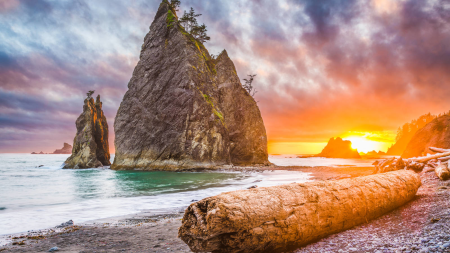
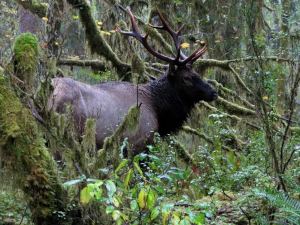

Seattle is a unique city tucked away in the NorthWestern part of the United States. In a state called, Washington. Dubbed as the Emerald City, Seattle houses many unique landmarks and events that make this place so special.


Olmsted Archives

Map of Rainforests, Aimee Danielson.

NPS Photo
Here, we will talk about the analytical facts about Olympia Washington.
- The population of Olympia is, 299,003 as of 2024.
- The year Olympia was incorporated is: January 28, 1859
- The regin of the state where Olympia resides, is on the left side. Towards the coast.
- Olympia is an urban city.
- The average income in Olympia for the folks who live there is, $40,585
- You can find out more info, on the Wikipedia page.